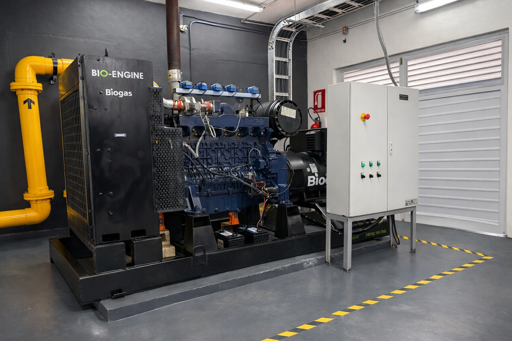

Acondicionamiento ajustado al consumidor final. Cada equipo — motogenerador, caldera, horno, secador o quemador — exige niveles distintos de pureza y estabilidad. Diseñamos el tratamiento al equipo, no al revés.

Cada consumidor tiene tolerancias distintas a humedad, H₂S y partículas. El acondicionamiento se calibra al equipo más exigente del proyecto.
Equipos preparados para resistir efectos corrosivos del biogás. Requieren control fino de H₂S y siloxanos.
Sustitución parcial o total de gas natural / combustóleo. Tolera niveles intermedios de impurezas.
Procesos térmicos con flama directa: agroindustria, alimentos, materiales.
Antorcha asistida, quemadores de proceso y sistemas de respaldo.
Estabilidad del flujo entre biodigestor y consumidor.
Regulación adecuada al equipo final.
Verificación de la calidad del acondicionamiento.
Asegura ausencia de condensados en línea.
Cuéntanos qué equipo tienes y diseñamos el acondicionamiento que necesita.